Dimensionality Reduction Library (Dr.L.)
0.2
Dr. L. is a C++ library for dimensionality reduction. In the context of this library, dimensionality reduction is considered to consist of:
- Estimation of the intrinsic dimensionality using sampled data
- Finding maps that reduce the dimensionality of data (forward map) or increase the dimensionality of data (reverse map). The "find" is performed by optimizing some metric based on the sampled data. In the ideal case, applying the forward map followed by the reverse map should regenerate the original data points.
- Mapping arbitrary coordinates to high and low dimensionalities
The library is intended to provide a consistent interface to multiple dimensionality reduction algorithms with an efficient C++ interface that runs efficiently on multicore architectures. A few routines have been optimized with an option for GPU acceleration or distributed computation.
Currently, the library offers intrinsic dimensionality estimation using:
- point-PCA
- reconstruction error
- residual variance.
The following dimensionality reduction methods have been implemented.
- Principal Component Analysis
- Multidimensional Scaling
- Locally Linear Embedding
- IsoMap
- Autoencoder Neural Networks
An executable is also supplied that can be built to allow for command-line access to the library routines. A description of an application of the library for molecular structure analysis has been published [Brown, 2009].
In general, dimensionality reduction algorithms provide a method for taking a set of samples 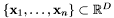 and calculating a corresponding low-dimensional representation 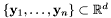. Because dimensionality reduction is often used for visualization, some algorithms do not generate an explicit map from the high dimensional coordinates to the low dimensional representation. For many applications, however, it is desirable to have an explicit forward map, 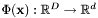, that gives the low-dimensional representation of an arbitrary point  and an explicit reverse map 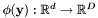 that gives the high-dimensional represenation of an arbitrary point 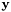. This allows for mapping new samples that were not available at the time of the initial reduction and also provides a common metric for comparison of algorithms. Therefore, for the purposes of this work, we consider dimensionality reduction as the problem of generating
and an explicit reverse map 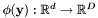 that gives the high-dimensional represenation of an arbitrary point 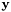. This allows for mapping new samples that were not available at the time of the initial reduction and also provides a common metric for comparison of algorithms. Therefore, for the purposes of this work, we consider dimensionality reduction as the problem of generating  and
and  from a training set of
from a training set of  samples, 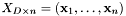. Because some methods do not generate explicit maps, we describe an approach for generating maps from a dimensionality reduction below.
samples, 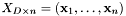. Because some methods do not generate explicit maps, we describe an approach for generating maps from a dimensionality reduction below.
The performance of each algorithm can be evaluated using the reconstruction error. Ideally, a forward map of an arbitrary point followed by a reverse map will give the same point back. Typically, the reconstruction error is given by 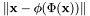.
Although hidden from doxygen, the Dr. L. library resides in the yala namespace. You can access Dr. L. commands in your code with the following lines:
#include "dimred/ya_dimred.h"
using namespace yala;
Dr. L. uses a custom linear algebra library for computations. To incorporate the library with your code, wrappers can be used for column-major or row-major matrices stored in traditional continuous memory arrays, STL vectors, or standard library valarrays. The wrapper used will depend on whether each datapoint is stored in a row or a column and whether or not the matrix is column major.
#include "dimred/ya_dimred.h"
using namespace yala;
int main(int argc, char **argv) {
int rows=4;
int cols=3;
int numel=rows*cols;
double input[numel];
YA_WRAP(double) input_w(input,rows,cols);
YA_WRAP_RM(double) input_w(input,rows,cols);
YA_WRAP_RM(double) input_w(input,cols,rows);
YA_WRAP(double) input_w(input,cols,rows);
return 0;
}
For single precision, double is replaced with float in the wrappers above, etc. For STL vectors:
std::vector<double> input;
...
YA_VWRAP(double) input_w(input.begin(),rows,cols);
YA_VWRAP_RM(double) input_w(input.begin(),rows,cols);
For valarray:
std::valarray<double> input;
...
YA_WRAP(double) input_w(&input[0],rows,cols);
YA_WRAP_RM(double) input_w(&input[0],rows,cols);
Several general dimensionality reduction routines are available through the pure virtual class YADimReduce. The base class can also be used for run-time selection of dimensionality routines:
The following sample code describes some of the routines available through the base class:
int high_dim=5;
int low_dim=3;
EigenOptions eigopts;
redmet->verbose(2);
redmet->find_t(input, output, low_dim, eigopts);
redmet->forward_t(input_mat, output_mat);
redmet->reverse_t(input_mat, output_mat);
double err = redmet->reconstruct_error(input);
int error_flag=redmet->save_map("example_maps.dat");
int error_flag=redmet->load_map("example_maps.dat");
For a list of additional routines, click on YADimReduce.
LLE and Isomap produce a low-dimensional embedding 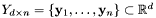 from the samples in 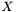 without generating an explicit map. Here, we have considered dimensionality reduction as a problem of finding the maps and from training data. For LLE and Isomap, we accomplish this with the maps 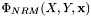 and 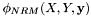 that allow for dimensionality reduction to be performed on future samples based on the initial embedding of training data. A natural choice for these maps is some method that retains the positioning of a sample relative to its neighbors in the training set. Because LLE and Isomap assume that a sample and its neighbors are locally linear, we can perform the mapping using a linear combination of a sample's 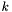 neighbors:
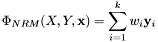
and
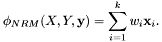
That is, the training set neighbors for an arbtrary point or can be identified in the input dimensionality and used to determine the sample mapping based on their positions (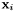 or 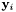) in the desired dimensionality. The question is how to choose the weights  . The equations bear a strong resemblence to the reconstruction approach used in LLE and it has been suggested that this same approach can used to map new samples [Saul, 2003]. In this case, are determined in a least-squares optimization with a closed form solution. There are issues in implementing this approach, however. For the case when the number of neighbors is greater than the intrinsic dimensionality of the manifold, the solution for is not unique. Because it can be desirable that is variable and because the intrinsic dimensionality is not necessarily known a priori, it is not straightforward to decide when the problem must be conditioned to provide a unique solution. Therefore, although this approach is an option in Dr. L., a simpler alternative is the default. In this case, is chosen to be the inverse Euclidean distance between the sample and the neighbor 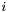. This approach allows for an arbitrarily high number of neighbors, however, will clearly fail in the case when a sample is outside the convex hull of its neighbors (due to the constraint that is positive).
. The equations bear a strong resemblence to the reconstruction approach used in LLE and it has been suggested that this same approach can used to map new samples [Saul, 2003]. In this case, are determined in a least-squares optimization with a closed form solution. There are issues in implementing this approach, however. For the case when the number of neighbors is greater than the intrinsic dimensionality of the manifold, the solution for is not unique. Because it can be desirable that is variable and because the intrinsic dimensionality is not necessarily known a priori, it is not straightforward to decide when the problem must be conditioned to provide a unique solution. Therefore, although this approach is an option in Dr. L., a simpler alternative is the default. In this case, is chosen to be the inverse Euclidean distance between the sample and the neighbor 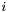. This approach allows for an arbitrarily high number of neighbors, however, will clearly fail in the case when a sample is outside the convex hull of its neighbors (due to the constraint that is positive).
When forward or reverse mapping is performed using a method that does not obtain explicit maps (e.g. LLE and IsoMap), neighbor reconstruction mapping (NRM) will be performed. In this case, the user has the choice to use LLE weights or distance weights (as described above). Additionally, either k-nearest neighbors or epsilon neighbors can be used:
For details, see YADimReduce.
PCA is a linear dimensionality reduction approach that has been widely applied to problems in almost every field of experimental science. The goal of PCA is to find a coordinate representation for data where the most variance is captured in the least number of coordinates. This representation can be found by performing an eigenvalue decomposition (or singular value decomposition) such that the resulting eigenvectors/singular vectors provide an orthonormal basis for the data while the eigenvalues/singular values provide information on the importance of each basis vector. Given the training set , a row-centered matrix is calculated as 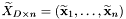, where 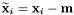 and 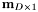 gives the row means. Eigen decomposition of the training set covariance matrix, 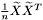, is performed to give 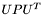. The forward map is then given by 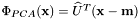, where 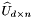 is the matrix composed of the first 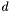 columns of  corresponding to the eigenvectors with the largest eigenvalues. The reverse map is calculated as 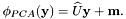 The reconstruction error for PCA will be zero for
corresponding to the eigenvectors with the largest eigenvalues. The reverse map is calculated as 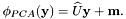 The reconstruction error for PCA will be zero for  , where
, where  is the number of non-zero eigenvalues in 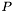. For details on the PCA routines, see YAPCAReduce.
is the number of non-zero eigenvalues in 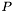. For details on the PCA routines, see YAPCAReduce.
Locally Linear Embedding (LLE) is a nonlinear dimensionality reduction method. LLE is performed by first solving for the location of each sample in terms of its neighbors. For each sample, the neighbors are determined as all samples within a ball of specified radius centered on the sample or as the nearest neighbors. A weight matrix, 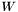, is obtained by determining the weights in a linear combination of neighbors that best reconstruct each sample,
{eqnarray} {min}_W & E(W) = \| {x}_i - w_{ij} {x}_j \|^2 \ {subject to} & \{ {array}{l} w_{ij} = 0 { if } {x}_i { not neighbor } {x}_j\ w_{ij} = 1 { for every } i, {array} . }
where 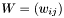. This problem has a closed form solution and assures not only that each approximation 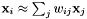 lies in the subspace spanned by the neighbors of , but also that the solution is invariant to translation, rotation, and rescaling. These properties allow, by design, calculation of a linear mapping that is also invariant to translation, rotation, and rescaling. This mapping from the data samples to the low dimensional embedding is performed by minimizing the embedding cost function,
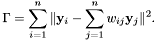
In this case, the weights  are fixed and the low-dimensional coordinates are optimized. This is a quadratic minimization problem with a unique global minimum. It can be solved as a sparse 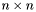 eigen value problem where the bottom non-zero eigenvectors provide the embedding (the bottom eigenvalue is zero). From this, it can be seen that LLE assumes that a sample and its neighbors can be treated in a linear fashion. Global structure is maintained due to the overlap of neighbors in each local patch in the embedding cost function. A detailed description of LLE can be found in [Roweis, 2000] and [Saul, 2003].
are fixed and the low-dimensional coordinates are optimized. This is a quadratic minimization problem with a unique global minimum. It can be solved as a sparse 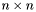 eigen value problem where the bottom non-zero eigenvectors provide the embedding (the bottom eigenvalue is zero). From this, it can be seen that LLE assumes that a sample and its neighbors can be treated in a linear fashion. Global structure is maintained due to the overlap of neighbors in each local patch in the embedding cost function. A detailed description of LLE can be found in [Roweis, 2000] and [Saul, 2003].
Because the low-dimensional representation is optimized directly, no explicit maps are generated. Here, we use 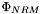 and 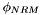 to perform mapping in terms of the initial LLE reduction as described above. LLE is parameterized by the neighboring method (kNN or epsilon) and any options for eigen decomposition. These should be set before performing a find operation:
EigenOptions eigopts;
int k=10;
redmet->neighbors(k);
double eps=0.2;
redmet->epsilon(eps);
redmet->neighbor_mode(0);
int low_dim=2;
redmet->find_t(input, output, low_dim, eigopts);
See YALLEReduce for further details.
Isomap is a nonlinear dimensionality reduction algorithm, described in [Tenenbaum, 2000]. The first step in the Isomap algorithm is to impose a graph structure 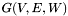 on the input dataset . Each sample 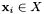 is represented by a node 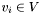 and two nodes  and 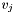 are connected by an edge 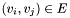 with weight
and 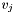 are connected by an edge 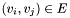 with weight  if is a a neighbor of 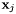. Neighbors are calculated in the same manner as perfromed in LLE. The weight of is given by the Euclidean distance between and . The second step in Isomap involves computation of the shortest paths between all nodes in 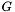. These distances are stored pairwise in a matrix
if is a a neighbor of 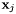. Neighbors are calculated in the same manner as perfromed in LLE. The weight of is given by the Euclidean distance between and . The second step in Isomap involves computation of the shortest paths between all nodes in 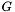. These distances are stored pairwise in a matrix  . The distance matrix is intended to represent the distances between all samples on the manifold - the geodesic distances. Because these distances are Euclidean for each sample and its neighbors, Isomap makes the same assumption of local linearity as LLE. Unlike LLE, global distances between all neighbors are explicity calculated with the graph approximation to geodesic distances.
. The distance matrix is intended to represent the distances between all samples on the manifold - the geodesic distances. Because these distances are Euclidean for each sample and its neighbors, Isomap makes the same assumption of local linearity as LLE. Unlike LLE, global distances between all neighbors are explicity calculated with the graph approximation to geodesic distances.
Because all pairwaise distances are available, Multi-Dimensional Scaling (MDS) can be applied to to perform a low-dimensional embedding. MDS is a variant of PCA that starts with a distance matrix 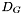, converts the distance matrix to an inner product matrix, and calculates the eigenvalue decomposition of the resulting matrix. For the case presented here, this is performed by squaring each element in the distance matrix , double-centering the resulting matrix, and performing the eigenvalue decomposition to give . The low-dimensional embedding is then given by 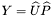, where is the matrix comprised by the first columns of corresponding to the eigenvectors with largest eigenvalues and 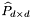 is the diagonal matrix containing the square roots of the largest eigenvalues.
Like LLE, Isomap does not calculate explicit maps in order to perform an embedding. Here, we use and to perform mapping in terms of the initial Isomap reduction as described above. Also like LLE, IsoMap is parameterized by the neighboring method (kNN or epsilon) and any options for eigen decomposition. These should be set before performing a find operation:
EigenOptions eigopts;
int k=10;
redmet->neighbors(k);
double eps=0.2;
redmet->epsilon(eps);
redmet->neighbor_mode(0);
int low_dim=2;
redmet->find_t(input, output, low_dim, eigopts);
IsoMap relies on a graph constructed from each point and its neighbors and there is no guarantee that a single connected graph will result from the neighboring procedures. In the case where multiple connected components are found, dimensionality reduction is performed separately on each component. Future mappings using NRM based on this dimensionality reduction will map points into their nearest component. Statistics on the number and sizes of connected components using different neighboring criteria can be obtained with the YAIsoReduce::component_stat() routines.
The runtime required for reduction with IsoMap can be reduced by using landmark points. In this case, a subset of points from the sampled data are chosen as landmark points that are used for computation of the distance matrix and for performing future mapping using NRM. In this case, a vector of indices for the landmarks is also supplied to the find routine (0 is first index). [For wrappers, the vector can be a row vector or a column vector.]
YAIsoReduce redmet;
...
redmet.findmap(input, output, low_dim, eigopts, landmarks);
For details on these and other routines provided, see YAIsoReduce.
An autoencoder performs dimensionality reduction via a bottleneck architecture neural network. Autoencoders were originally introduced sometime in the early 1990s, but they have not been widely applied due to the extreme difficulty of the optimization problem associated with training the resulting network. However, a method was recently proposed for pre-training an autoencoder neural network using a Restricted Boltzmann Machine (RBM) in order to accelerate the optimization process [Hinton, 2006]. This method was used to obtain impressive results on a very large benchmark dataset of hand written digits.
The autoencoder introduced in [Hinton, 2006] consists of weighted sums and compositions of the well-known function 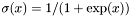. These functions are separated into distinct layers, with interconnections between functions in adjacent layers defining the network structure. At each layer in the network, inputs into the next layer consist of terms of the form 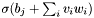, where  represents a bias, represents a weight, and represents an input from the previous network layer. The inputs to the first layer are taken to be the components of the original vectors in our dataset 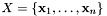. The weights and biases are then optimized such that the mean reconstruction error 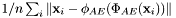 is minimized (where 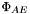 is the forward map and
represents a bias, represents a weight, and represents an input from the previous network layer. The inputs to the first layer are taken to be the components of the original vectors in our dataset 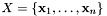. The weights and biases are then optimized such that the mean reconstruction error 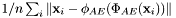 is minimized (where 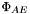 is the forward map and  is the reverse map given by the network).
is the reverse map given by the network).
To provide an illustrative example, suppose we have a dataset with native dimension 784, for which we want to construct a 2-dimensional embedding. We first define a network structure such as 784--1000--500--250--2, where the integers in the sequence represent the number of  functions in each layer. When appropriately trained, this structure will perform a reduction of 784-dimensional data to a 2-dimensional embedding. The justification for the initial increase in dimension to 1000 is that because the functions are inherently binary, we may experience a loss of information when going from normalized data in 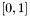 to values in ; the possible loss of information resulting from this process is potentially counter-balanced by an initial increase in dimensionality. The encoding structure is then mirrored to form a 2--250--500--1000--784 decoding network structure. The encoder and decoder networks are then joined and training is performed on the aggregate network.
functions in each layer. When appropriately trained, this structure will perform a reduction of 784-dimensional data to a 2-dimensional embedding. The justification for the initial increase in dimension to 1000 is that because the functions are inherently binary, we may experience a loss of information when going from normalized data in 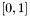 to values in ; the possible loss of information resulting from this process is potentially counter-balanced by an initial increase in dimensionality. The encoding structure is then mirrored to form a 2--250--500--1000--784 decoding network structure. The encoder and decoder networks are then joined and training is performed on the aggregate network.
As mentioned above, the optimization procedure for obtaining the autoencoder weights proceeds in two steps. In the first step, a RBM is trained. This training is performed for a user specified number of iterations. In the second step, the autoencoder weights are fine-tuned using back-propagation (BP). This step is also performed for a user specified number of iterations. In both cases a training set is used for the optimization and a test set is used to avoid overtraining. The training set is also split into batches to avoid overtraining, as well as to improve algorithm speed. During each iteration all of the batches are used in sequence.
The layers of the neural network and corresponding weights yield an analytic expression for both the forward () and reverse () maps that is optimized during training. This allows for future mapping of arbitrary points.
When using the autoencoder, several additional commands must be executed before the find routine in order to parameterize the random number generator and the sizes for the layers. Additionally, many other parameters can be tuned for autoencoder training. The most important parameters are given in the example below.
For additional routines, parameters, and test set specification, see YAATEReduce.
Dimensionality reduction methods give an approach for obtaining a map . In addition to having a method to calculate the maps, we must also determine an appropriate value for . One obvious choice is to determine some metric for quantifying the success of dimensionality reduction and evaluate the reduction performance at different embedding dimensionalities. For PCA and MDS (IsoMap), this metric can be the residual variance. The eigenvalues obtained in these approaches give the variance in each dimension and therefore the sum of the to eigenvalues is a measure of the variance that is not accounted for in the reduction. When this value is near zero, little is gained from adding a dimension. Although LLE also solves an eigenproblem, the eigenvalues obtained have been shown to be unreliable in determining [Saul, 2003].
To obtain the eigenvalues from PCA, MDS, IsoMap, and LLE in Dr. L.:
int high_dim=20;
int low_dim=3;
...
redmet.find_t(input, output, low_dim, eigopts);
double eigen_values[high_dim];
YA_WRAP(double) eig_w(eigen_values,1,20);
eig_w=redmet.eigenvalues();
An alternative metric utilized in Isomap [Tenenbaum, 2009] is a geodesic distance correlation residual given by , where  is the correlation coefficient between geodesic distances and distances in the low-dimensional space . This metric requires knowledge of the geodesic distances, however. For linear subspaces, the geodesic distances are given by the Euclidean distances. Otherwise, a method for estimating the geodesic distances, such as the one provided in Isomap, must be utilized.
is the correlation coefficient between geodesic distances and distances in the low-dimensional space . This metric requires knowledge of the geodesic distances, however. For linear subspaces, the geodesic distances are given by the Euclidean distances. Otherwise, a method for estimating the geodesic distances, such as the one provided in Isomap, must be utilized.
To evaluate the distance residual using, for example, IsoMap:
int high_dim=20;
int low_dim=3;
...
redmet.find_t(input,output,low_dim,eigopts);
int dimensionalities[3]={15, 10, 5};
double corrcoef[3];
double rsquared[3];
YA_WRAP(int) wdim(dimensionalities,1,3);
YA_WRAP(double) wcorr(corrcoef,1,3);
YA_WRAP(double) wrsq(rsquared,1,3);
dist_residual(redmet.graph_dists(),output_matrix,dimensions,
corrcoeff,rsquared);
dist_residual(redmet.graph_dists(),output_matrix,dimensions,
corrcoeff,rsquared,landmarks);
For PCA and MDS, the distance residual can be evaluated between the input and output matrices used in the find calculation. For LLE and the autoencoder, the distance residual is of little value.
As discussed earlier, a more general method that allows comparison between different algorithms is the reconstruction error [Hinton, 2006]. To calculate the reconstruction error using existing maps stored in redmet:
Note that when using NRM for mapping (LLE, MDS, IsoMap), the reconstruction error for the samples used to obtain the maps will always be 0.
The approaches listed above are often cited as methods for estimating the intrinsic dimensionality of a manifold. However, they all rely on dimensionality reduction methods that attempt an embedding of sample data in a space with lower dimensionality. Therefore, these approaches are really only suitable for estimating the smooth embedding dimensionality. This subtlety is important because the Whitney embedding theorem dictates that a smooth embedding of a -manifold may require as many as dimensions. Knowledge of the smooth embedding dimensionality is desirable for performing dimensionality reduction. For determining the intrinsic dimensionality, however, methods such as local-PCA might be more accurate for manifolds with complex structure. This is because they do not rely on a single-coordinate embedding of the entire manifold.
Dr.L. provides a variant of local PCA, referred to as point PCA (see [Brown, 2009]) in order to estimate the intrinsic dimensionality. Taking the same approximations used in LLE and Isomap, we assume that a local region of a manifold given by a point and its nearest neighbors is approximately linear (local PCA differs from point PCA in that generalized clustering techniques such as vector quantization are used to determine locality). This assumption allows for estimation of intrinsic dimensionality by assessing the error in fitting each set of points to a lower-dimensional hyperplane. PCA can be utilized to perform this task; for a -dimensional manifold, the residual variance should be near zero given an encoding with principal components. For example, in the case of a 2-dimensional manifold, the neighborhood of each point should reside on a 2-dimensional plane and therefore the variance in the data should be explained entirely by the first 2 principal components.
For details on using point-PCA in Dr. L., see point_pca() for k-nearest neighbors and point_pca_ep() for epsilon neighbors.
A variety of sample manifolds (all embedded in 3 dimensions), can be generated using Dr. L. as described in the file ya_manifold_samples.h. For example, to generate the japanese flag with 700 samples:
#include "dimred/ya_manifold_samples.h"
int nS=700;
double manifold[nS*3];
int colors[nS];
YA_WRAP(double) wmanifold(manifold,nS,3);
MathRandom<MathMersenneTwister> rng;
unsigned long seed=123456789;
rng.seed(seed);
ya_manifold_japaneseflag(wmanifold,colors,nS,rng);
For examples on more advanced use of the library, see the cml_drl executable supplied with Dr.L.
Brown, W.M., Martin, S., Pollock, S.N., Coutsias, E.A., Watson, J.-P. Algorithmic Dimensionality Reduction for Molecular Structure Analysis. Journal of Chemical Physics. 2009. 130: p. 044901.
Hinton, G.E., Salakhutdinov, R.R. Reducing the Dimensionality of Data with Neural Networks. Science. 2006. 313: p.504-507.
Roweis, S.T., Saul, L.K. Nonlinear Dimensionality Reduction by Locally Linear Embedding. Science. 2000. 290: p. 2323-2326.
Saul, L. Roweis, S. Think Globally, Fit Locally: Unsupervised Learning of Low Dimensional Manifolds. Journal of Machine Learning Research. 2003. 4: p.119-155.
Tenenbaum, J.B., de Silva, V., Langfor, J.C. A Global Geometric Framework for Nonlinear Dimensionality Reduction. Science. 2000. 290: p. 2319-2323.
Generated on Fri Jun 5 11:11:49 2009 for Dr.L. by
 1.3.9.1
1.3.9.1